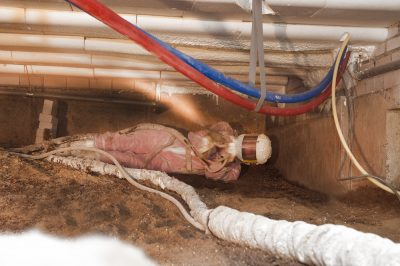

Vloerisolatie Icynene ecospray
U zoekt een goede, maar ook duurzaam verantwoorde vloerisolatie? Overweeg zeker eens Icynene isolatie. De Icynene ecospray wordt veel toegepast bij woningeigenaren die geen PUR of isolatiefolie wensen. Icynene is een isolatieschuim, waarbij tijdens het aanbrengen geen HFK’s en giftige, vluchtige stoffen vrijkomen. Het uitschuimen van Icynene komt namelijk tot stand door een reactie met water i.p.v. gassen. Icynene vloerisolatie is zeer interessant voor woningen die gebouwd zijn voor 1983.12;
| Toepassing | onderzijde betonnen vloer (door de open celstructuur is hout ook mogelijk) |
| Materiaal | EcoPUR, uitschuimen is door een reactie met water |
| Doe-het-zelf | Niet |
| Garantie | 10 jaar op product en verwerking |
| Certificaat | ISSO, TNO |
| Prijsindicatie | €30,- p/m² incl. btw en montage bij een laagdikte van 15cm |
| Subsidie mogelijk | Ja, ISDE, klik hier |
| Isolatiewaarde | Rd=3,5 (bij een laagdikte van 15cm) |
| Besparing / jaar | ca. € 220,- per 50 m² |
Geen giftige stoffen;
HFK-vrij. Per 2023 verplicht
Geurarm;
Icynene is opencellig. Het ontgassen vindt direct plaats. Bij PUR duurt dit langer omdat het gesloten cellen zijn.
Ook voor houten vloeren (i.v.m. open cellen);
10 jaar garantie
Wat is Icynene?
Icynene is een isolatieschuim dat wij ter plaatse in de kruipruimte tegen de onderkant van de vloer sprayen.
Binnen enkele seconden stolt de vloeistof en hardt het uit. Omdat het schuim in vloeibare vorm aangebracht wordt, komt het terecht in alle naden, kieren en openingen bij afvoeren.
Hierdoor ontstaat er een naadloos isolatiepakket, waardoor de warmte in de vloer blijft en koude trek uit de kruipruimte wordt geremd.
Het isolatieschuim bestaat voor 99% uit lucht.
Houten vloer isoleren: ook met Icynene?
Icynene is ook voor de houten vloer een goede isolatie. Icynene is namelijk een opencellig, en dus dampopen schuim, waardoor het hout niet verstikt.
Verschil tussen Icynene en polyurethaan (PUR)
Voor de helderheid: Icynene is een PUR-soort. Toch is er een groot verschil met de huidige, veel toegepaste polyurethaan (PUR):
Icynene is een HFK-vrije ecopur, 100% op waterbasis. Dit is niet het geval bij de standaard PUR.
Icynene is hierdoor ook geurarm. Icynene loopt vooruit op de toekomst: Vanaf 2023 is het sprayen van schuim met HFK’s overigens ook verboden.
Zoekt u een goed en duurzaam alternatief voor PUR? En bent u wel gecharmeerd van isolatieschuim, vanwege de goede kierdichting?
Dan is Icynene zeker is een goede vervanger voor purschuim. Icynene ecopur is mogelijk bij een goed bereikbare kruipruimte, met een minimale hoogte van 50 cm.
Heeft u interesse? Neem gewoon eens contact met ons op voor een kruipruimtecheck!
Waar komt Icynene vandaan?
Icynene ecospray is afkomstig uit Canada. Het extreme klimaat van dit land, met temperaturen tot + 35°C in de zomer en tot – 40°C in de winter,
en de uiterst strenge Canadese milieunormen stonden aan de wieg van de ontwikkeling van dit schuim.
In Canada en Amerika, maar ook steeds meer in Europese landen, wordt Icynene veelvuldig toegepast en heeft het al diverse groene labels verworven.

U zoekt een gecertificeerd verwerker voor Icynene?
Het aanbrengen van Icynene gebeurt door geselecteerde en gecertificeerde isolatiebedrijven. Onze verwerkende bedrijven worden door Icynene Nederland periodiek opgeleid en getraind.
Doorlopend vinden er productcontroles uit om de kwaliteit te bewaken en te garanderen.
Icynene isolatie prijs
De kosten voor Icynene zijn o.a. afhankelijk van de situatie van uw kruipruimte en uw vloertype. De prijs van Icynene is globaal rond € 30,00 per m².
Icynene is een investering die u terugverdient tussen 7 tot 10 jaar. Voor een offerte op maat komen we altijd even bij u in de kruipruimte kijken. Dat is gratis en vrijblijvend.
Vergelijk meer producten
Dakisolatie
Platdakisolatie IKO EnerthermGeluid
Binnenwandsysteem HV70 Van FaayEco-Baffles Van VRK
Geluidisolatie Isolgomma Van Imbema
Gevel
BuitenisolatiegevelHoutvezelisolatie Van Gutex
Isolatie Isovlas PL Plaat
Spouwisolatie HR++ Neopixels EPS Parels
Glas
Glasfolie van HomechillHR++ Isolatieglas
Renovatieglas en Kozijnen
Vloer
Bodem afsluiting KalkkorrelsReflectiefolie Tonzon